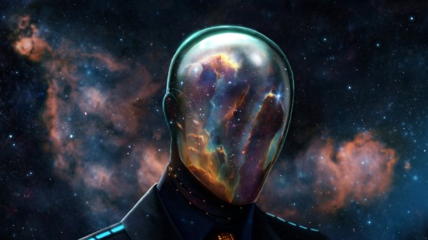

“İnsanı” Tanımlamak: Philip K. Dick’in “Androidler Elektrikli Koyun Düşler Mi?” Romanında Doğa ve Yapay Zeka
Dr. Gerald R. Lucas, Dijital Kültürler dersinde Androidler Elektrikli Koyun Düşler Mi? romanının insan ve android arasında bir karşıtlık üzerine kurulduğundan bahseder. Bu karşıtlık, bir kıyamet sonrası (post-apocalyptic) türünden olan romanın hikayesindeki “İnsan nedir?” ve “Android nedir?” sorularını tanımlamayı beraberinde getirir. Androidler Elektrikli Koyun Düşler Mi?‘de androidler fiziksel açıdan insanlardan farksızdır fakat mahrum oldukları tek şey empatidir. Kendi hayatlarından başka hayatlara sevgi duyma yeteneğinden yoksundurlar. Androidlerin insanlardan farklı olduklarını ayırt etmenin tek yolu, manevi açıdan şok edici reaksiyonlar uyandırabilecek varsayımsal senaryolara cevap olarak verdikleri göz hareketleri gibi psikolojik tepkilerin yetersizliğini ölçen Voight-Kampff testidir. Genellikle hayvanlara yapılan muameleleri içeren bu senaryolar, androidlerin duyguları deneyimlemede nasıl başarısız olduğunu gözler önüne serer. Romandaki insanların gözünde bu duygu eksikliği onları “akıl hastası” yapmaktadır. Peki androidi oluşturan şeyler bu özellikler ise insanı “insan” yapan nedir? Androidler Elektrikli Koyun Düşler Mi? doğaya göre hangi özelliklerin insan olmaya dahil olduğu üzerine düşünürken aynı zamanda Philip K. Dick’in romanı, yapay zekanın tekilliğe doğru ilerlemesi gibi insan doğasının da teknolojiyle beraber nasıl değiştiğini inceliyor.
Bizi “İnsan” Yapan Nedir?
Dr. Daniel Criswell “Bizi İnsan Yapan Nedir?”[1] adlı makalesinde “İnsanlar gerçekten de biyolojik ve toplumsal açıdan Dünya’daki diğer canlılardan farklı mıdır?” sorusunu soruyor. Dr. Criswell, “İnsanları diğer yaşam formlarından ayıran kesin özellikler var mıdır ya da insanlar tamamen diğer hayvanların vücut tasarılarındaki milyonlarca yıllık raslantısal gelişmelerinin bir sonucu mudur?” şeklinde sorgulamaya devam ediyor. Androidler Elektrikli Koyun Düşler Mi?‘de insanı insan yapan şey diğer insanların duygularını anlama ve empati denilen, diğer bireylerin duygularını ve güçlüklerini anlama ve özdeşleştirme kabiliyetidir. Peki ya insanı ve androidi ayıran tek önemli kriter empati ise, Dick karakteristik olarak “sosyal bilinci veya ahlaki sorumluluklardan eksik olma durumu”na sahip sosyopatları nasıl açıklayabilir? Eğer Philip K. Dick androidlerin diğer canlılarla empati kuramadıkları için “akıl hastası” ve insandışı oluğunu düşünüyorsa, Ted Bundy[2] gibi toplumda sosyopat kabul edilen insanlar da insandışı mıdır?
Bu iki durumu karşılaştırdığımızda Dick’in insan karakterlerinin, “üstün” oldukları androidlerin aksine, duygusal halleri tamamıyla gerçek dışıdır. Örneğin hikayedeki insanlar duygusal durumlarını Penfield Ruh Hali Orgu (Penfield Mood Organ) aleti ile kontrol altına alabiliyorlar. Ruh Hali Orgu kullanıcıları “mesleğine dair yaratıcı ve taze bir tavır” (Dick s. 7), “ekranda ne olursa olsun televizyon izleme isteği” (Dick s. 6) ve en mizahi olanı “her konuda kocanın daha üstün bilgisini onaylamanın hazzı” gibi birçok ve son derece spesifik duyguyu ayarlayabiliyorlar. Bu Ruh Hali Orgu kullanıcılarına seçtikleri duyguları fiilen yaşama deneyimi şansı verse de bu duygular gerçek değildir, çünkü kullanıcıların bu özel duyguya verdikleri tepkiler “gerçeği” temsil etmezler. Tam olarak bu sebepten, romandaki insanların androidlerden herhangi bir farkı olduğunu söylemek çok zor ve eğer bu insanlar androidlerden farksız değillerse hikayedeki insanı gerçekten tanımlayan nedir?
“Sibernetik Döngü”
Abraham Maslow ihtiyaçlar hiyerarşisi teorisinde[3] kendini gerçekleştirme aşamasına gelmeden önce karşılanması gereken temel ihtiyaçlar olduğunu savunur. Maslow’un teorisine göre, yemek, güvenlik, sevgi ve özgüven gibi güçlü ihtiyaçlar karşılandığı takdirde yaratıcı anlatım ve kendini gerçekleştirmeye dair derin arzular su yüzüne çıkar. Maslow kişisel gelişim ve kendini gerçekleştirme olmaksızın insan hayatının hiçbir zaman tatmin edilemeyeceğini ve anlaşılamayacağını ifade eder. Maslow bunun insanoğlu olarak doğamızda olduğunu söyler. Yaşamak için yemek ve su gibi temel ihtiyaçların olduğu bilinen bir gerçektir. Bununla beraber bir insan uzun bir süre temel ihtiyaçlarını karşılayamaz ise aşırılığa yönelecektir. Sandy G “Maslow’un Sekiz Temel İhtiyaçları ve Gelişim Modelinin Sekiz Aşaması” adlı makalesinde[4], Maslow’un temel ihtiyaçlar karşılanılmadığı takdirde “bizi rahatsız edeceğini ve bu ihtiyaçlar yeterince gerçekleşebildiği kadar motive olacağımızı” ifade ettiğini vurguluyor.
Sandy G, Maslow’un neden “Bir insan aç veya susuz ise ya da bedeni kimyasal olarak dengesiz ise enerjisinin tamamı bu eksiklikleri tamamlamaya yönelir ve diğer ihtiyaçları pasif hale gelir” dediğini açıklayarak devam ediyor. İnsanların, tıpkı hayvanlar gibi hayatta kalmak için ne gerekiyorsa yapacaklarını söylemek mümkündür.
Örnek olarak, Dante’nin Inferno’sunda[5] Dante Alighieri, cehennemin dokuzuncu katının ikinci halkasında mahkum olan Kont Ugolino della Gherardesca[6] adında bir adamın dramatik ve etkileyici tanıklığını gösterir. Bu tarihi hikaye[7] Ugolino’un ihanetinden sonra iki oğlu ve iki torununun hapsedilmesinin ve açlıktan ölmelerinin emredilmesi üzerinedir. Kulede neler olduğunun bilinmemesine rağmen Ugolino’nun şiddetli açlığı sebebiyle kendi soyunu öldükleri an birer birer yediği söylentileri yayılır. Çoğu insan Ugolino’nun bu hayvanlara özgü hareketinin vahşice olduğu düşünecektir. Ugolino’nun bu örneği hayatın temel ihtiyaçlarına kadar inmenin insanları bu tür hayvansı hareketlere yöneltmesi noktasına getirmektedir. Bizi bir hayvana eşdeğer olmaktan farklı yapan nedir?
Dr. Grald R. Lucas, Dijital Beşeri Bilimler dersinde “Hayvan olarak doğmuş olmamızın aksine insan olmayı öğrenmemiz gerekiyor. Bebekler hayvandırlar. Onlar kendilerini nasıl kontrol etmeleri gerektiğini öğrenmek zorundadırlar” der. Bedenlerimiz evrimin birer ürünüdürler ve evrimin kanunlarına göre bizler hayvanlardan geliştik. Bu döngü çevrenin bize direkt etkisi olan “sibernetik döngü”nün bir parçasıdır.
İnsan Evrimi
Dr. Gerald R. Lucas “Etik, aramızda gizli bir anlaşmadır. Hayvanlar bunu yapmazlar. Onlar ne olursa olsun besleneceklerdir.” der. Buna rağmen Kont Ugolino ve Abraham Maslow’un doğrulamasıyla da görüyoruz ki insanlar temel ihtiyaçlarından yoksun olduğu zamanlarda etik yok olur. Çoğu insan hayatta kalmak için aynı şekilde gereken ne ise yapıyor ise bir insan ile bir hayvan veya öldürülmeden önce öldürme içgüdüsüne sahip bir android arasında gerçekten bir ayrım yapılabilir mi?
“Empati” Doğal Mıdır?
Androidler Elektrikli Koyun Düşler Mi? insan doğasının neden doğuştan kötü olduğuna dair güçlü bir argüman içerir. “Kötü”nün insanlara mahsus olduğu ve insanların doğaya karşı kötülük yapmaya kalkışmaktan aciz olduğu düşünülür. Buna rağmen küresel ısınma tartışmalarında olduğu gibi insanlar doğaya karşı sürekli kötülük yapmaktadır. Androidler Elektrikli Koyun Düşler Mi?‘de androidler empati ve duygudan ayrılmış birer insan olarak görülebilirler. Temellerine kadar sıkıştırılmış olarak, androidler anlamlarına ulaşmak için son çare olarak zorbalığa ve cinayete başvurmaktadırlar. Fakat, daha önce de bahsedildiği gibi, insanlar da yemek ve su gibi temel ihtiyaçlarından yoksun olduğu zamanlarda aynı şeyi yapmaktadırlar. Bu insanlığın nasıl kendi doğalarından başka bir şeye indirgenmeksizin doğuştan zalim ve tehlikeli olduğunu gösterir. Bu nokta aslında insanların ve androidlerin özünde birbirlerinden farklı olmadıklarını ortaya koyar. Dijital Kültürler dersinde Dr. Gerald R. Lucas, bu durumumuzu “İnsan sabit kalmaz. İnsan değişkendir,” şeklinde ifade eder. Androidler Elektrikli Koyun Düşler Mi? kendi içinde bir dilemmadır.
Roman insanlarla androidler arasındaki çizginin empati olduğu tasvirini yapar fakat Penfield Ruh Hali Orgu insanların da duygusuz olabileceğine yer verir. Bu durum empatinin “doğal” olup olmadığı sorusuna neden olur. Hikayeyi incelediğinizde empatinin doğal olmadığını fakat öğrenildiğini söylemek tartışılır bir şekilde ikna edicidir. Empati, insan doğasından ziyade, kendi hükmünden doğan, doğa kanunlarının etik kökeni olan doğal düzen temelinde oluşturulmuştur.
“Tekillik”
“Teklilik” simgesel olarak bir kara deliktir. Daha ilerisinin görülmediği bir noktadır. Daha uygun bir şekilde söylemek gerekirse, Dr. Gerald R. Lucas’ın da vurguladığı gibi teknoloji ötesinin görülemeyen noktasıdır. Bill Joy, “Geleceğin Neden Bize İhtiyacı Yoktur” adlı makalesinde[8] yapay zekanın özfarkındalık ve bilinçlilikte ilerlemesi konusuna dikkat çeker. Joy, yapay zeka formlarının insan ırkına son verebileceğinin uyarısını yapar. Bunun yanı sıra Dr. Gerald R. Lucas, “İnsanları tanımlama şeklimiz her zaman teknolojiyle olmuştur. Teknoloji olmadan bizler neyiz?” diye sorar. Oysa bu çok güzel bir soru: “Teknoloji olmadan bizler neyiz?”. Androidler Elektrikli Koyun Düşler Mi?‘yi incelediğimiz zaman insanlar ile doğa arasında ve insanlar ile teknoloji arasında açık bir çatışma görmek gayet mümkün.
Fakat Terminus Dünya Savaşı doğayı mahvediyordu. Lucas, Dijital Beşeri Bilimleri dersinde “Doğanın ölümüyle beraber bizler de yavaş yavaş yok olacağız. Doğanın hayatta kalmasına ihtiyacımız var. Bu bizim meydana gelme şeklimiz” şeklinde açıklıyor. Bu ifadeler “İnsanların doğaya ihtiyacı olduğu kadar teknolojiye de ihtiyacı var mıdır?” sorusunun sorulmasını gerektiriyor. Dick’in romanında bunun cevabı evet fakat aynı zamanda hayır. Hikayedeki insanlar “Andy’leri” faydalı bir teknoloji ürünü haline getirerek iş gücü olarak kullanıyorlar. Bununla beraber aynı zamanda insanların androidlerin birer tehdit oluşturduğunu hissettikleri an onları yok etme konusunda hiçbir çekinceleri olmuyor.
Öldürmek Yerine Emekli Etmek
Androidler Elektrikli Koyun Düşler Mi?‘de teknoloji androidler tarafından temsil ediliyor. Hikayede, Rick Deckard’ın işinde de olduğu gibi kelle avcısı insanlar bu androidleri emekli ediyorlar. Fakat Dick neden “öldürmek” yerine “emeklilik” kelimesini kullanıyor? “Emekli” kelimesinin iki ilginç anlamı bulunmaktadır.
Emeklilik: “Kişinin pozisyonundan ya da işinden gönüllü olarak çekilmesi” ve “Kişinin pozisyonundan ve işinden geri çekilmesine sebep olunması”.
Bu iki anlamın ortak olan yönü “işlevsizlik” algısıdır. Deckard gibi kelle avcıları bu androidleri “emekli ediyor” çünkü onlar insanlar için özünde artık değersizdirler. Bu tam olarak da androidlerin büyük başarılar elde etmeyi hak etmediğinin kabul görülmesinden dolayı “köle” ya da işçi olarak kullanılmaya başlanmasının sebebidir. Dick’in androidlerden bahsederken öldürmek yerine emeklilik kelimesini kullanması fakat onları “katil” olarak tasvir etmesi ilginçtir. Dick daha da ileriye giderek “İnsansı robot besbelli tek başına bir avcı hayvan haline geldi” der (Dick s. 29).
“Öldürmek” kelimesi yaşayan bir şeyin ölmesine sebep olmak anlamına geliyor, yani Dick, androidleri yaşam dışı kabul etmesi sebebiyle onların öldürülmediğini, emekli edildiğini mi ima ediyor? Öldürmek kelimesi için “Özün, sıklıkla daha güçlü olan tarafından zayıf niteliklerinin yok edilmesi ya da ciddi zarar verilmesi.” bir başka anlamdır. Bu anlamla beraber Dick’in androidleri katil olarak görmesinin sebebi insanlardan daha üstün ve güçlü olduklarını kabul etmesi anlamı çıkarılabilir. Bu üstünlük fikri Bill Joy’un yapay zekaya yönelik kaygılarını beslemektedir. Joy bu kaygısını “Gelecek Neden Bize İhtiyaç Duymaz?” makalesinde şu şekilde dile getiriyor: “Bu teknolojilere inanılmaz bir güç verildiğine göre onlarla nasıl bir arada olabileceğimizi sormamız gerekmiyor mu? Ve eğer teknolojik gelişmelerimizin bir sonucu olarak kendi soyumuzun tükenmesi muhtemelse ya da hatta mümkünse büyük bir dikkatle devam etmemiz gerekmez mi? Robot teknolojisi hayali öncelikle akıllı makinaların biz Cennet Bahçeleri’ndeki günlerimiz gibi boş vakitlerin keyfini çıkarırken işlerimizi bizim için yapmalarıydı. Ancak böylesi fikirlerle dolu tarihinde Makineler arasında Darwin ile George Dyson, ‘Hayat ve Evrim oyununda masada üç oyuncu vardır: insanlar, doğa ve makineler. Ben kesinlikle doğanın tarafındayım. Fakat şüpheleniyorum ki doğa makinelerin tarafında’ diyerek uyarı yapar. Gördüğümüz ve Moravec’in de katıldığı gibi üstün robot ırklarıyla karşılaşmamızda hayatta kalmamız pek mümkün durmuyor” (6-7).
Joy, Ken Liu’nin “Arkada Kalmak”[9] adlı kısa hikayesinde aslında oyun dışı kalmış yönüne hitaben “Robot biliminin ikinci hayali; robot teknolojisiyle kendimizi kademeli olarak yenileyeceğiz ve bilincimizi indirerek ölümsüzlüğe yaklaşmayı başaracağız” (7) diyerek devam eder. Joy’un asıl odak noktası “üstün” yapay zeka robotları tarafından hakim olunmaktır. Bu korku androidler insanları öldürmeye başladıkları zaman emekli edilmeleriyle Androidler Elektrikli Koyun Düşler Mi?‘de gösterilmektedir. Roman, neden androidlerin “emekli olmaları” gerekliliğine ilişkin soruyu beklemektedir. Neden insanlar basitçe androidleri hapislere yollamıyorlardı? Maria Brand “Phillip K. Dick’in Androidler Elektrikli Koyun Düşler Mi? ve Isaac Asimov’un Ben, Robot adlı romanlarında İnsanlar ve Androidler Arası Empati ve Antipati” adlı makalesinde[10] şunu ileri sürmektedir: “Androidler tehlikeli ve insanlık için bir tehdit olarak algılanmaktadır.” (2) Fakat bugünkü toplumda herhangi bir insanın bir suç işlemesi ve “idam cezası” almaması mümkündür. Cinayet işleyen ve ölüme mahkum edilmeyen bireyler vardır. Dick’in romanında karakterlerin androidleri emekli yapmaya iten ikincilleşme korkusudur. Eylemin kendisi tabiati gereği kötüdür. Bu davranış insanlığın, temelde zalim ve vahşi olmaktan başka bir şey olmayan “doğal seleksiyon ” konseptine nasıl alçaldığını gösterir. İnsan olmanın anlamı anlaşılması belirsiz ve özneldir. Philip Dick’in Androidler Elektrikli Koyun Düşler Mi? romanı Bill Joyun’un tekilliğe dair endişelerine ışık tutuyor. Joy teknolojinin dokunulmaz noktalara ulaşabilme potansiyeli olduğuna inanıyor. Dick’in romanı insanın karanlık tarafını gösterir. Celia Deanne-Drummond “Tanrıcılık Bakış Açısında İnsan Doğası” adlı makalesinde “İnsanlar ve diğer bütün varlıklar arasında hala ontolojik[11] boşluk üzerine güçlü bir diretme vardır.” der. Yani insanlar ve diğer varlıklar arasında varlığın doğası ve varlığın teorisine istinaden hala bir karşıtlık olduğunu bildirir. İnsanlar ve Dick’in androidleri, dikkatle incelendiği zaman romanın izin verdiğinden daha yakından kıyaslanabildiği görülebilir.

Dick’in romanın en ilgi çekici yanı empati baz alınarak insanlar ile androidler arasında ayrım yapmak için tasarlanan Voight-Kampf testinin dahi kusurları bulunmakta ve görevinde tamamıyla yeterli olmamaktadır. Bu nokta; insanlarla androidler arasındaki çizginin gerçekten de ince olduğu fikrini desteklemektedir. Brand makalesinde[12], insanların ve android gibi robot benzeri figürlerin aynı anlamda empati yapabildikleri bakış açısını “dış görünüşlerinin ve hareketlerinin gerçekçiliğinin sonucu olarak empati veya antipati yapay zekalar tarafından temin edilebilir.” ifadesini ekler. Brand tam olarak önemli olan noktayla “androidler ve robotlar sonuç olarak pek de farklı değiller” diyerek devam eder. “İnsanı” tanımlayan şey belirlenmiş bir tanım değildir. Toplum olarak bizler insanı tanımlarız ve bu tanım sayısız kere değişebilir. Dijital Beşeri Bilimler dersinde Dr. Geral R. Lucas, “Empati doğaya doğru genişlemeli midir?” sorusunu sorar. Cevap ise evettir. Empati dünyadaki her varlığa kadar uzanmalıdır, çünkü en sonunda ortada “daha üstün” varlık kalmayacaktır. En nihayetinde önemli olan her organizmanın temelde aynı olması ve hepsinin maddeden yapılmış olmasıdır.